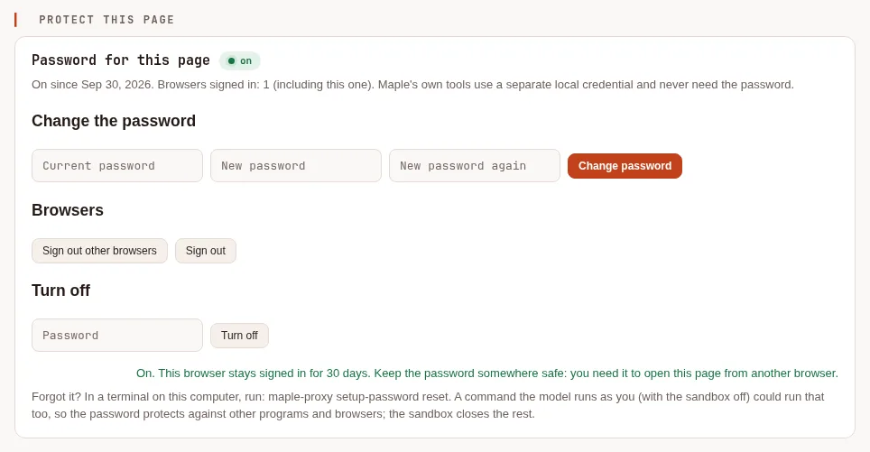
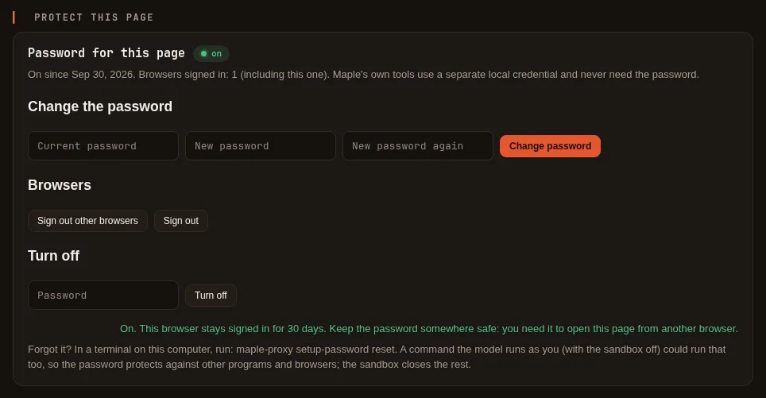
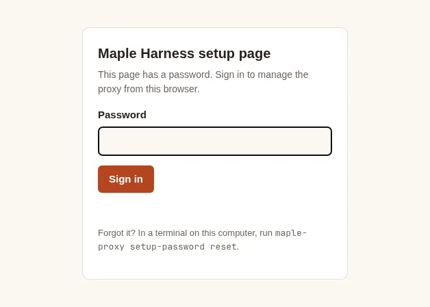
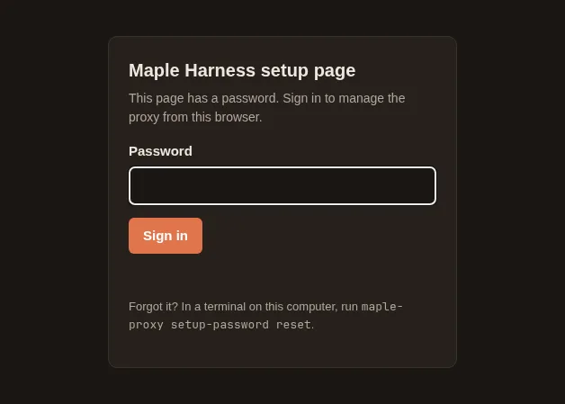
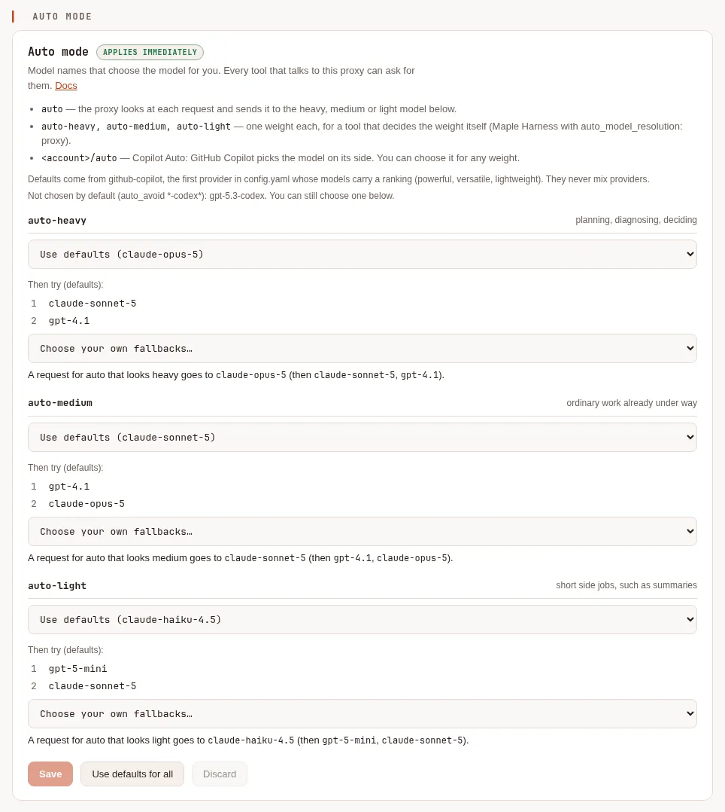
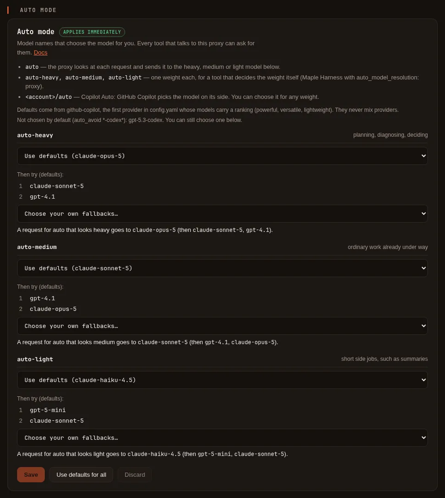
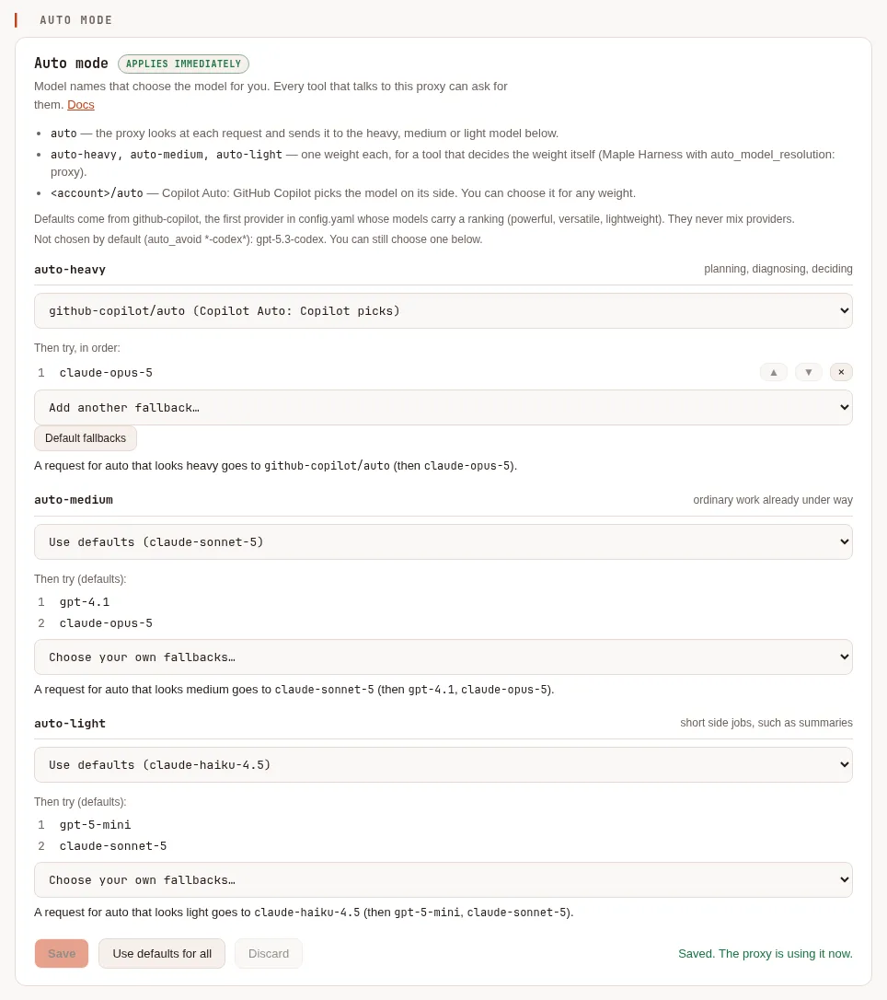
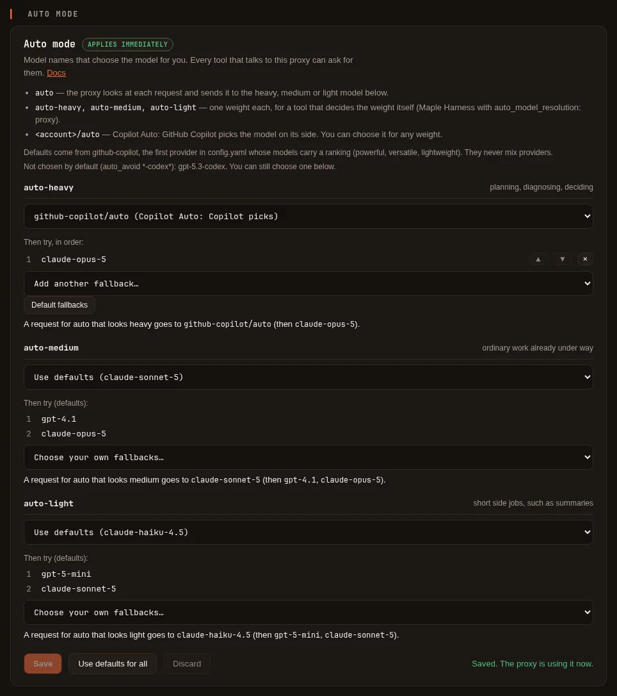
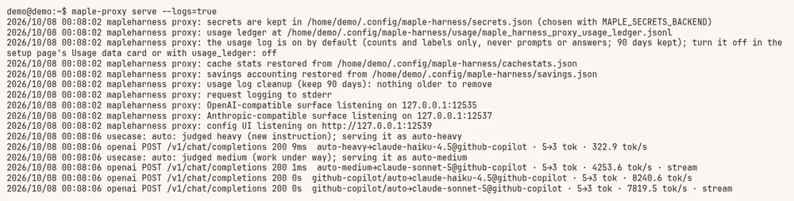
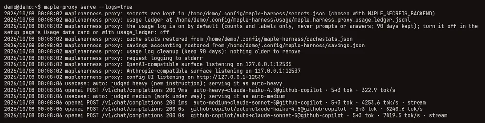

The proxy and its setup page #
On this page
maple-proxy is the program that holds your sign-ins and talks to the models. The agent uses it, and so can
any other tool that speaks the OpenAI or Anthropic API. Start it with:
maple-proxy serveIt stays in the foreground. Add --logs=true to watch requests, --logs=/path/to.log to keep a record, or
--logs=stdout when something else (systemd, launchd) is capturing output; See what auto chose
explains a log line. To keep it running in the
background, see Keep it running in the background.
What it listens on #
| Address | What it is | Who may use it |
|---|---|---|
127.0.0.1:11539 | The setup page | This machine only. It refuses to listen anywhere else |
127.0.0.1:11535 | OpenAI-compatible API (/v1) | This machine; other machines only with an access token |
127.0.0.1:11537 | Anthropic-compatible API | This machine; other machines only with an access token |
The addresses and ports are in the server: section of config.yaml. The proxy picks up changes to its
providers and settings without a restart.
The setup page #
Open http://127.0.0.1:11539 on the machine running the proxy. A row of links at the top jumps to each part of
the page, which comes in three groups:
- At a glance: the Savings, Cache and Sessions cards, and Usage data: what the proxy did for you.
- Set up: your account, your model servers (Providers), the Proxy settings, and Search by meaning.
- More: Remote access, Protect this page, Recent activity, and the raw configuration.
From there you can:
- Sign in to GitHub Copilot (a browser flow) or save an Anthropic API key. See Sign in.
- Add model servers: pick the type (Ollama, LM Studio, oMLX, Lemonade, Unsloth, or any OpenAI-compatible server), press Detect models, and save. See Connect a model server.
- See your Copilot allowance: the plan, how many chats are left, and when they reset.
- Manage remote access: switch remote control on, pair a phone with a short code or a link, choose what each device may do, choose the folders a phone may start sessions in, and revoke a device at any time. See Control it from your phone.
- Read recent activity: sign-ins, token changes and remote switches.
Keys and sign-ins you enter here are stored in your system keyring, not in the configuration file.
Protect the setup page with a password #
By default the setup page has no password: any program or browser on this computer can open it and change what it manages. To require one, open More > Protect this page, type a password twice (at least 8 characters) and press Turn on. The browser you did it in stays signed in for 30 days; any other browser shows a sign-in form.




- The Maple Harness commands keep working (
maple-proxy savings,cache,auth,maple-harness auth,savings,doctor, the status bar): they use a separate credential that the proxy keeps in your secret store, and they never need the password. - Change it on the same card; it needs the current password and signs out every other browser.
- Sign out other browsers ends every session but yours. Turn off asks for the password and a confirmation.
- The password itself is never stored, only a slow, salted hash of it, in the Maple Harness config folder.
From a terminal, as the same user:
maple-proxy setup-password status # on or off, and how many browsers are signed in
maple-proxy setup-password set # set or change it (asked twice, not shown); signs every browser out
maple-proxy setup-password reset # forgot it? removes it, so the page is open againA running proxy picks these up at once, with no restart.
What it protects against: other programs and other people's browsers on this computer. It does not protect against
something running as you that can open a terminal: that could run setup-password reset. That includes a command the
model runs while the sandbox is off; with the sandbox on, model commands can neither reach the page nor read the
credential those commands use. See Security.
Settings you may want #
Everything below is a card under Proxy settings on the setup page. Each control has a one-line explanation and a link back here. You do not need to edit any file.
When you change something, nothing is written yet. Press Review changes to see exactly what will change in
config.yaml, then Save settings, or Revert to throw the edits away. The page checks every value with
the same rules the proxy uses when it starts, and points at the field that is wrong. Saved settings apply to
the very next request, with no restart, except the ones marked restart required.
Prompt caching #
Long conversations resend the same beginning on every turn, and providers that cache charge much less for the part
they have already seen. The Caching card has a switch per provider, shown only where it can be controlled
(Claude through the Anthropic API or through Copilot); it is on by default. Keys: prompt_cache,
prompt_cache_key and the optional cache_warming. See Caching.
Model aliases #
An alias is a short, fixed name for a model, so a tool can ask for local or cloud and you can change what that
means later without touching the tool. Set them on the Model aliases card, or with model_aliases and a model's
own alias in the file. See Providers and models.
Fallbacks #
A fallback tells the proxy what to try when a model cannot answer: its account is out of chats or credit, the
backend is overloaded, or it is unreachable. model_fallbacks lists other models to try for a model;
provider_fallbacks sends one account's requests to another account, for example a second Copilot account, then
Anthropic, then a local model. <provider id>/<model> names one account's copy of a model. A fallback happens only
before any output is sent, never for bad credentials or malformed requests, and nothing falls back unless you add a
rule. Responses from a fallback carry X-Maple-Served-By. See Fallbacks, and
adding a second GitHub Copilot or Anthropic account to set one up.
Auto mode at the proxy #
The proxy has four built-in model names that choose the model for you. Any tool that talks to the proxy can ask for them:
| Name | What answers |
|---|---|
auto | The proxy looks at each request and sends it to the heavy, medium or light model below |
auto-heavy | The model for planning, diagnosing and deciding |
auto-medium | The model for ordinary work already under way |
auto-light | The model for short side jobs, such as a summary |
Each weight is one model plus the models to try after it when it cannot answer, like any fallback.
Budgets, the "out of quota, tried last" rule and provider_fallbacks apply to them as to any other model.
- Defaults. With nothing configured, the proxy takes the first provider in
config.yamlwhose models carry a ranking (GitHub Copilot ranks its models; for other servers addcategory: powerful,versatileorlightweightto a model) and uses that provider's own ranking, the same way Maple Harness's/model autodoes: the best model of the matching category, then two more from the same provider as fallbacks. The defaults never mix providers. Models matching*-codex*are not chosen by default;auto_avoidchanges that list ([]turns it off). With no ranked provider there are no defaults, and the names are not listed until you choose models. - Choose them yourself on the setup page's Auto mode card: for each weight, a model and an optional list of fallbacks. See Set up auto mode. Copilot Auto can be chosen for any weight.
- Your own names win. If
model_aliases(or a provider's model) already has the nameautoorauto-heavy, it keeps meaning exactly what you set, and the built-in one with that name is not listed. - See what happened. Every answer says which name a request went to and which model answered: see See what auto chose.
The proxy weighs a request from what the request itself contains, so it cannot know what the tool intended. Maple
Harness weighs each message itself: with harness.auto_model_resolution: proxy it asks for auto-heavy,
auto-medium or auto-light (or your own names, with harness.auto_model_map) and the proxy decides which model
each means. maple-harness doctor checks that the proxy serves those names. See
Harness settings and Automatic choice.
Set up auto mode #
Open the setup page (http://127.0.0.1:11539) and choose Auto mode in the row of links at the top. With
nothing set, each weight shows Use defaults with the model it uses, the fallbacks under Then try (defaults),
and a preview of where a request goes. The note above the weights names the provider the defaults come from and the
models not chosen by default.


- To change a weight, choose a model from its dropdown. It lists every model the proxy serves, with its provider
and ranking, and each Copilot account's Copilot Auto, as
github-copilot/auto (Copilot Auto: Copilot picks). - To choose the fallbacks yourself, pick them one by one from Choose your own fallbacks…. The arrows reorder them, ✕ removes one, and Default fallbacks goes back to the defaults.
- Check the preview under the weight, then Save. "Saved. The proxy is using it now." means the next request uses it; nothing restarts.


Use defaults for all clears every weight (then Save), and Discard drops changes you have not saved. If the
Proxy settings card has unsaved changes, save or discard them first. The card writes ordinary model_aliases
and model_fallbacks entries to config.yaml, keeping its comments. After the save above, the file holds:
model_aliases:
auto-heavy: github-copilot/auto
model_fallbacks:
auto-heavy:
- claude-opus-5The same entries written by hand work, and the card shows them. A weight with no alias keeps its default model; fallbacks given for it replace the default fallbacks.
Copilot Auto #
GitHub Copilot's own automatic mode, where Copilot picks the model for each request, is listed as a model of each
Copilot account: github-copilot/auto, when your account offers it. It never takes the plain name auto, which is
the proxy's own auto mode (or your alias of that name). You can choose it in two ways:
- As the model. Ask for
github-copilot/autoby name: in Maple Harness with/model github-copilot/auto, or in any other tool as its model name. It also works in model aliases, fallbacks and budgets like any other model. - As the model for a weight. On the Auto mode card, choose
github-copilot/auto (Copilot Auto: Copilot picks)for a weight. A request forautojudged to be that weight, or a request for that weight by name, then goes to Copilot Auto, and its fallbacks apply when it cannot answer.
See Copilot Auto for how it differs from Maple's auto.
See what auto chose #
Three places tell you where each request went and which model answered.
Response headers. X-Maple-Served-By names the provider and model that answered. X-Maple-Router says how a
request for auto was weighed and which name it went to and, for Copilot Auto, which models Copilot offered and
which one it chose. For a request for auto that went to the heavy weight, set to Copilot Auto as above (a demo
setup with a stand-in Copilot service), curl -si printed:
X-Maple-Prefix-Stabilized: json
X-Maple-Router: auto: heavy -> auto-heavy; copilot auto: intent chose claude-haiku-4.5; offered gpt-5-mini, claude-haiku-4.5, claude-sonnet-5
X-Maple-Served-By: github-copilot/claude-haiku-4.5A request for github-copilot/auto by name gets only the Copilot part of X-Maple-Router, and a request for
auto-light by name gets no X-Maple-Router at all. All headers are listed under
Response headers.
The usage log. requested is the name the tool asked for (auto, auto-heavy, github-copilot/auto) and
model is the model that answered, with its provider. The three requests above were recorded as:
| requested | model | provider |
|---|---|---|
auto | claude-haiku-4.5 | github-copilot |
github-copilot/auto | claude-haiku-4.5 | github-copilot |
auto-light | claude-haiku-4.5 | github-copilot |
The proxy's log. With logs on, the proxy writes one line for every request, and a request for auto gets one
more line before it with the weight it was judged to be and the name it went to:


Two of those lines, as text:
2026/10/08 00:08:06 usecase: auto: judged heavy (new instruction); serving it as auto-heavy
2026/10/08 00:08:06 openai POST /v1/chat/completions 200 9ms auto-heavy→claude-haiku-4.5@github-copilot · 5→3 tok · 322.9 tok/s| Part | What it means |
|---|---|
openai | Which API the request came in on: openai or anthropic (webui for the setup page) |
POST /v1/chat/completions 200 9ms | The method, path and status, and how long the whole request took |
auto-heavy→claude-haiku-4.5@github-copilot | The name the request was served as, the model that answered, and the provider. For a request for auto the name is the weight it went to; for Copilot Auto it reads github-copilot/auto→ and the model Copilot chose. When the name is the model itself, it appears once |
5→3 tok | Prompt tokens and answer tokens, as the provider reported them |
322.9 tok/s | Answer tokens per second over the whole request |
cache partial 3584r/512w | How the provider's prompt cache did (hit, partial, miss or lost), with the tokens read from and written to it. Only when the provider reports its cache |
stream | The answer was streamed |
cancelled by caller | The tool hung up before the answer was complete |
3 tool call(s) | The answer asked for tools |
A request that fails also prints the error it was answered with, on the next line. Prompts and answers are never
written unless you add --log-bodies.
Turn the log on. It depends on how the proxy was started:
- You start it yourself:
maple-proxy serve --logs=truewrites to the terminal,maple-proxy serve --logs "$HOME/maple-proxy.log"appends to a file, and--logs=stdoutis for something else that captures output. - It runs as a service (
maple-harness service install): it already runs with--logs stdout. Read it withjournalctl --user -u maple-proxy -fon Linux, or in~/.config/maple-harness/run/maple-proxy.logon macOS. See Keep it running in the background. - Maple Harness started it for you (the default when nothing was running): it runs without logs and its output
is not kept, and no setting changes that. Type
/proxy stopin the agent (other sessions on this machine share that proxy and lose it too, until it is started again), then in another terminal runmaple-proxy serve --logs=true(with--config <file>if you start the agent with--config). The agent uses a proxy that is already running and does not start a second one.
Guards #
The Context guard (context_guard) is for tools that do not know a model's window: it sends the request as is,
drops the oldest turns until it fits, or refuses it. The Repeat guard (degenerate_guard, off by default)
stops a reply that has collapsed into repeating itself. See Guards.
Keeping the cache useful #
Two settings on the Guards card help a provider's prompt cache on long conversations: the Prefix stabiliser
(prefix_stabilizer, on by default) keeps the start of each request the same from turn to turn, and Trim old
tool results (context_trim, off by default) replaces old, large tool results with a short note. Responses say
what was done in X-Maple-Prefix-Stabilized and X-Maple-Tool-Results-Trimmed. See
Caching.
Images and browser snapshots #
Four choices on the Guards card, all off by default, shrink images and browser page snapshots before they are
sent: image_resize_tool, image_resize_user, image_superseded and snapshot_trim. Smaller images cost fewer
tokens, and small text in a screenshot may become harder to read. See
Images and browser snapshots.
Seeing how the cache is doing #
The Cache card shows today's hit rate, the tokens read from and written to the cache, a table per model and per
client, and the latest times the cache was lost, with the reason. maple-proxy cache prints the same in a terminal,
and responses that are not streamed carry X-Maple-Cache. Only counts and labels are kept, never a prompt or an
answer. To test your own account, see Check the cache yourself.
Seeing cost per session #
The Sessions card groups AI units, tokens and requests by session. Maple Harness sends a random session id with
every request (X-Maple-Session), and a subagent sends its parent's id, so its spend counts toward the session that
started it. Any other client can send the header too. See What /cost tells you.
Seeing what it saves #
The Savings card, first on the page, shows what the proxy's techniques saved and what they cost, across every
session on this proxy. Every figure is tagged measured (a count, or what the provider billed) or estimated
(a value in AI units, estimated from what your own requests cost). The estimate is never more than what was
actually spent, costs are subtracted, and the net can be negative. maple-proxy savings prints the same in a
terminal. See See and reduce what a task costs and Check it yourself.
Daily budgets #
For each provider you can cap requests per day, AI units per day, or both (days are UTC). At the limit, requests
are refused or handed to its fallback. Key: budgets. See Budgets.
Limits and hosts (restart required) #
The rate limit (off for this machine, on for other machines by default) and allowed hosts (extra names the proxy answers to) are read when the proxy starts, so restart it after saving. The usage log, one line of counts per request, is on by default and applies as soon as you save. See Limits and hosts, The usage log and Your usage data.
If you prefer files, all of this lives in config.yaml (usually ~/.config/maple-harness/config.yaml):
model_fallbacks:
cloud: [local] # cloud and local are model aliases (see Connect a model server)
context_guard: truncate # off | truncate | error
degenerate_guard: true
budgets:
- provider: anthropic
max_requests_per_day: 150
max_ai_units_per_day: 20
server:
allowed_hosts: [my-computer.example] # this machine's Tailscale name, or another name clients use
rate_limit:
requests_per_minute: 120
burst: 20
max_concurrent: 4
usage_ledger: /data/maple/usage.jsonl # leave it out for the default place; off turns it off
usage_retention_days: 90 # days of daily files to keep; 0 keeps everythingSaving from the setup page changes only the settings you changed in config.yaml, so comments you added by hand
stay, except inside the provider list when you move a provider up or down it. Keys are never in it: they stay in your system keyring, and the file holds only a reference.
Using it from another machine #
By default only this machine can reach the model APIs. To let another machine on your network use them, set
the listen address and create an access token with the proxy scope on the setup page:
server:
openai_compat: 0.0.0.0:11535
anthropic_compat: 0.0.0.0:11537
allowed_hosts: [my-box.local] # the name other machines use to reach itThe proxy refuses to start on a non-loopback address until such a token exists, and callers send it as
Authorization: Bearer <token>. Requests from other machines are rate-limited. The setup page itself never
listens beyond this machine.
Check the cache yourself #
Providers cache the start of a request that they have seen recently, and reading from that cache costs a fraction of processing it again. Whether that is working for your account and your model is easy to see:
maple-proxy cache probe --model gpt-5-mini --yesIt sends the same small request twice, a few seconds apart, through the running proxy, and prints what each call
reported: prompt tokens, tokens read from the cache, tokens written to it, and AI units. It says so plainly when a
model reports no cache figures, in which case the cache may not be visible from here. Without --yes it sends nothing
and only says what it would send (two requests of about 6,000 tokens, which may spend a few AI units). --tokens
changes the size (1,500 to 50,000) and --wait the pause between the two calls. Nothing it prints contains a key.
Other useful commands #
maple-proxy auth status # what is signed in
maple-proxy secrets status # where each secret is stored (never its value)
maple-proxy setup-password status # whether the setup page has a password
maple-proxy audit tail # who did what: token changes, refused requests
maple-proxy update # install a newer release